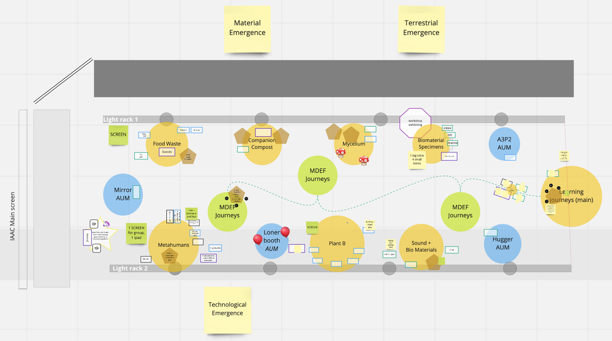
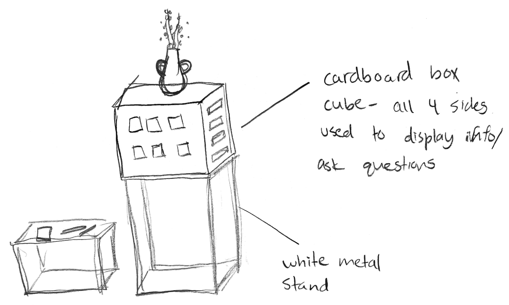
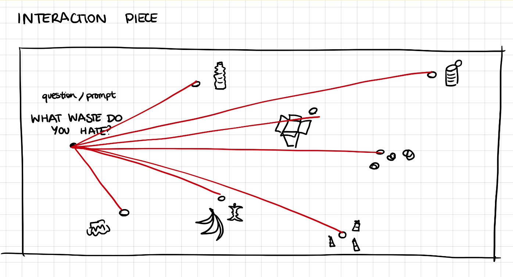
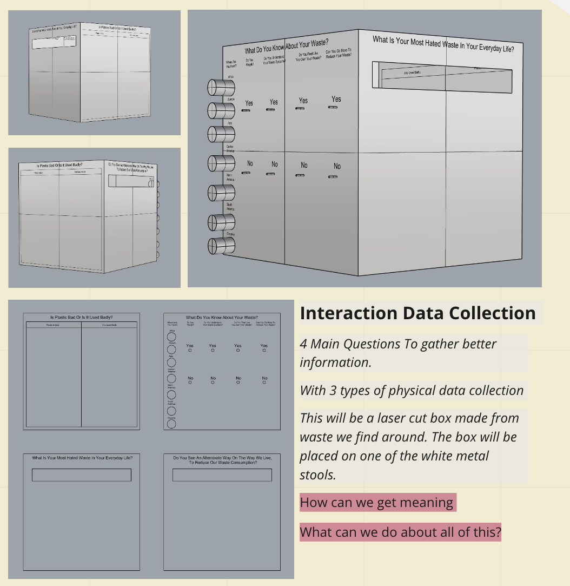

This week was dedicated to the creation of our Design Dialogue exhibitions. On Monday, everybody presented the results of their group’s interventions. After gathering courage and presenting first, Marina & I (and Pippa too, over zoom) sat down and relaxed as we listened to what the other groups had to share.
I particularly liked what Plant B group (Chris, Juaquin and Didac) showed the class. Their concept was to create a space for an “inter-species jam session”, where the plants would be both musicians and instruments. By wiring a MakeyMakey to different potted plants, they managed to connect them to a computer and associate each one to a different sample on Ableton. I was amazed by the great website they managed to put together in such a short amount of time and the amount of people who were engaged with the project at Parc Ciutadella.
I thought the concept was really interesting and could be built upon to make something which includes visuals too. That’s why I spoke to the group about making some art that could be added to each sample generated by the plants, using the real time audiovisual programs I know so well (i ❤️ touchdesigner). Although I have never worked with Ableton MIDI inputs within TD, I theoretically know how I could put it all together. It’s just a matter of doing it, and hoping my thoughts were correct. I might work on it during the holidays, if my laptop allows it.
My excitement around the interactive plant project confirms my passion for interaction design, which means that I may shift my focus back towards the tech area rather than continuing pursuing biomaterials. Although I enjoyed experimenting with biomaterials and collaborating with Marina and Pippa, I think that it is not the field I ultimately want to keep working on. However, I do believe that I can integrate my ethics on waste and what we learned together into my future projects.
After the presentations, we discussed what to display on Tuesday, December 21st and how to do it. We bounced around exhibition ideas, brainstorming how we could have a cohesive exposition while still remaining true to our individual and group projects. This is the final display the class decided to work with.

Overview of the whole class' set up.
For the remainder of the week, we had revisions with professors, group meetings and hands-on days all surrounding Design Dialogues. We sketched out some ideas on how to arrange our group area and our individual sections.
We also decided to make an engagement piece to display during the event as a way of getting feedback on our work and new ideas for what we could do in the future. We laser cutted a box with 4 main questions to gather better information and 3 types of data collection (strings, post its and submissions). The box was made from scrap material we found around IAAC and will be placed on one of the white metal stools available to us.


